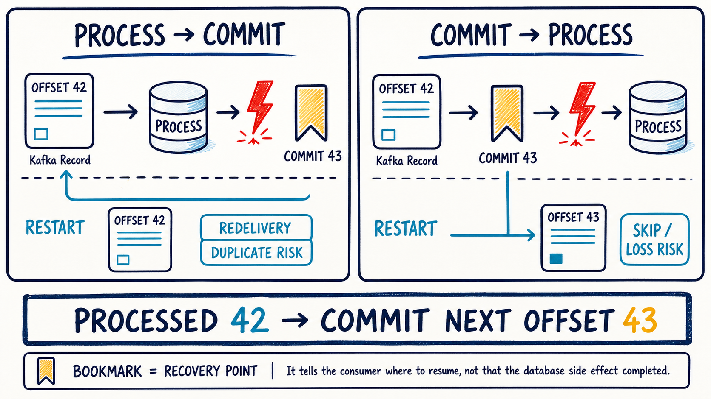

Position
Chỉ đúng offset kế tiếp mà consumer sẽ trả ra từ poll().
Consumer đã nhận record không có nghĩa là record đã được xử lý an toàn. Bài này giúp bạn nhìn rõ position, committed offset, thời điểm crash, duplicate/loss và cách viết consumer idempotent.
Chỉ đúng offset kế tiếp mà consumer sẽ trả ra từ poll().
Recovery point của consumer group khi restart/rebalance.
Nhìn thứ tự process/commit để đoán duplicate hay loss.
Nhận lại cùng event nhưng không tạo side effect lần hai.

commit(43) nghĩa là “lần sau đọc từ 43”, không phải “đánh dấu record 43 đã xong”. Bookmark Kafka cũng không chứng minh transaction database đã hoàn tất.poll() trả batch 10–12 thì position có thể đã là 13, dù listener mới xử lý offset 10.
Được Kafka lưu theo group.id + topic + partition. Group khác có bookmark riêng.
Vị trí cuối log. So với committed offset để ước lượng consumer group lag.
N thì recovery point là N + 1.Một lần poll lấy offsets 10, 11, 12. Chọn chiến lược và số record xử lý xong trước khi app chết. Hãy dự đoán trước khi nhấn chạy.
Record nào sẽ được giao lại? Record nào có nguy cơ bị bỏ qua?
Nhập offset cuối đã xử lý. Tự tính recovery point trước rồi kiểm tra.
Nếu vừa xử lý 42, bạn muốn lần sau bắt đầu ở đâu?
// Kafka Java client: commit offset kế tiếp
long processed = record.offset();
OffsetAndMetadata checkpoint = new OffsetAndMetadata(processed + 1);
// Với cả batch, ưu tiên metadata do ConsumerRecords cung cấp:
consumer.commitSync(records.nextOffsets());Giữ thứ tự committed ≤ position ≤ log end, rồi quan sát hai khoảng cách khác nhau.
Crash lúc này có thể khiến một phần batch được giao lại, tùy record nào đã tạo side effect.
auto.offset.reset không phải nút rewind: nó chỉ được dùng khi group chưa có committed offset hợp lệ hoặc offset hiện tại không còn tồn tại. Muốn đọc lại có chủ đích, dùng group mới hoặc reset offsets bằng công cụ vận hành.| Kiểu | Thứ tự điển hình | Khi crash ở khe hở | Đánh đổi |
|---|---|---|---|
| At-most-once | Commit trước rồi process | Có thể bỏ qua record chưa tạo side effect | Không duplicate, chấp nhận loss |
| At-least-once | Process thành công rồi commit | Record có thể được giao lại | Không loss do crash window, phải chịu duplicate delivery |
| Effectively-once ở DB | Dedup key + business update trong cùng DB transaction, sau đó ack | Kafka vẫn redeliver; DB từ chối side effect trùng | Cần event id ổn định, unique constraint và retention strategy |
Không cần Spring. Mục tiêu là thấy state nào sống qua “restart”. Hãy tự điền các TODO trước khi mở gợi ý.
Tạo package com.dream.learning.kafka.consumer. Lab này chưa cần dependency Kafka.
public record PolledRecord(long offset, String eventId) {
public PolledRecord {
// TODO 1: offset không âm
// TODO 2: eventId không null/blank
}
}public final class OffsetCheckpoint {
private OffsetCheckpoint() {}
public static long nextOffsetAfter(long processedOffset) {
// TODO: validate và dùng Math.addExact(...)
}
}IllegalArgumentException nếu offset âm; trả về Math.addExact(processedOffset, 1).public final class ProcessedEventStore {
private final Set<String> processedIds = new HashSet<>();
public boolean tryApply(PolledRecord record) {
// TODO: Set.add(eventId) trả false nếu đã tồn tại
}
public int sideEffectCount() { // TODO }
}Mô hình học tập: giữ cùng instance store khi tạo consumer mới để giả lập database sống qua restart. RAM thật sẽ mất khi process chết.
var store = new ProcessedEventStore();
var record = new PolledRecord(42, "evt-42");
store.tryApply(record); // DB side effect thành công
// CRASH trước khi commit 43
boolean appliedAgain = store.tryApply(record); // redelivery sau restart
assert !appliedAgain;
assert store.sideEffectCount() == 1;
assert OffsetCheckpoint.nextOffsetAfter(record.offset()) == 43;@Test void processed42MeansCommit43() { // TODO }
@Test void sameEventIdOnlyAppliesOnce() { // TODO }
@Test void differentEventIdsBothApply() { // TODO }
@Test void blankEventIdIsRejected() { // TODO }eventId. Dedup theo event identity hay theo offset? Trong đa số bài toán nghiệp vụ, eventId bền vững hữu ích hơn vì record có thể được republish sang topic/partition khác.Bắt đầu với RECORD để học dễ, rồi chuyển sang manual acknowledgment để nhìn rõ checkpoint.
spring:
kafka:
bootstrap-servers: localhost:9092
consumer:
group-id: order-projection-v1
enable-auto-commit: false
auto-offset-reset: earliest
listener:
ack-mode: recordSpring Kafka mặc định framework-level là enable.auto.commit=false; khai báo rõ trong lab giúp bạn nhớ chủ đích. Ack mode mặc định của container là BATCH.
create table processed_event (
event_id varchar(100) primary key,
processed_at timestamp not null default current_timestamp
);Primary key/unique constraint mới là hàng rào race-condition; existsById() rồi insert riêng lẻ không đủ an toàn khi chạy concurrent.
@Transactional
public boolean applyIdempotently(OrderEvent event) {
boolean firstTime = processedEvents.tryInsert(event.eventId());
if (!firstTime) return false;
// TODO: cập nhật order_projection trong CÙNG transaction
return true;
}@KafkaListener(topics = "orders.events.v1")
void consume(ConsumerRecord<String, OrderEvent> record) {
boolean applied = projectionService.applyIdempotently(record.value());
log.info("eventId={} partition={} offset={} applied={}",
record.value().eventId(), record.partition(), record.offset(), applied);
// listener return thành công → container xử lý commit theo AckMode.RECORD
}spring:
kafka:
listener:
ack-mode: manual_immediate@KafkaListener(topics = "orders.events.v1")
void consume(ConsumerRecord<String, OrderEvent> record,
Acknowledgment acknowledgment) {
projectionService.applyIdempotently(record.value());
// TODO: chỉ ack sau khi method transaction ở trên return thành công
}MANUAL_IMMEDIATE commit ngay khi acknowledge() được gọi trên consumer/listener thread. Không chuyển Consumer sang thread khác: KafkaConsumer không thread-safe.
Gửi 5 events, cố tình fail event thứ 3. Với RECORD, offsets 1–2 đã được checkpoint. Với BATCH, recovery/retry phụ thuộc error handler và batch state; hãy ghi lại record nào được giao lại.
Topic orders.offset.lab, group offset-lab-v1. Không kill consumer production.
projectionService.applyIdempotently(event);
if (crashSwitch.shouldCrash(event.eventId())) {
// TODO lab: dừng process tại đây, trước acknowledge()
}
acknowledgment.acknowledge();Dùng debugger breakpoint hoặc endpoint lab bật cờ; tránh gọi System.exit trong test suite dùng chung.
Ví dụ evt-crash-42. Ghi topic, partition, offset và row count trước khi kill.
Event phải được giao lại vì offset chưa commit. Log lần hai phải có applied=false; row business vẫn chỉ thay đổi một lần.
kafka-consumer-groups --bootstrap-server localhost:9092 \
--describe --group offset-lab-v1Đọc CURRENT-OFFSET, LOG-END-OFFSET, LAG. Producer send success không chứng minh consumer group đã commit.
Chỉ để quan sát: side effect tăng hai lần sau redelivery. Khôi phục dedup sau khi ghi bằng chứng.
Crash point; committed offset trước/sau; eventId; số delivery; số side effect; kết luận at-least-once/idempotency.
group, topic, partition, offset, committed, lag.
eventId, attempt, applied=true/false, exception.
processed_event row và business row/version/count.
position=13 có nghĩa offsets 10–12 đã xử lý DB xong?auto.offset.reset=earliest có làm group đọc lại từ đầu mỗi lần restart?Giải thích cho người khác bằng ba từ: position, bookmark, side effect. Nêu hai crash window.
enable.auto.commit, auto.commit.interval.ms, auto.offset.reset, poll controls.spring.kafka.*.